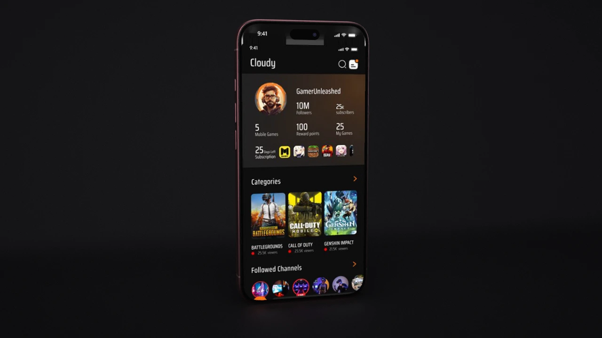
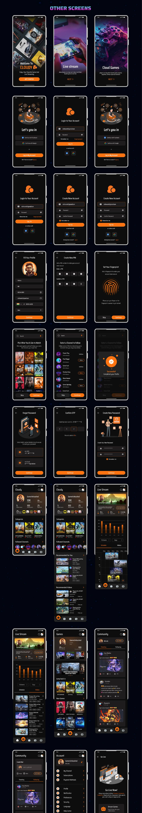
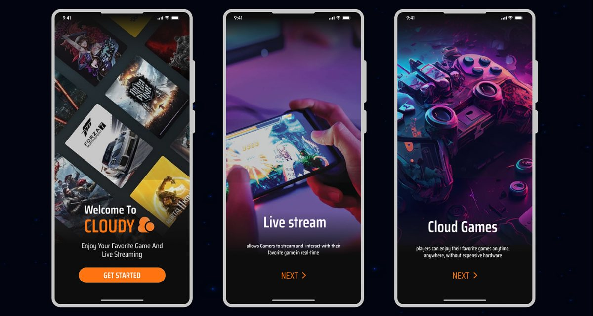
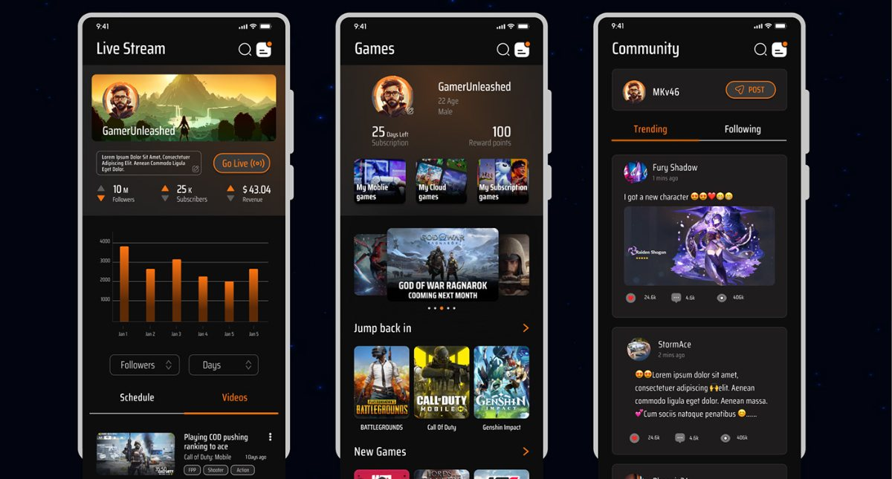
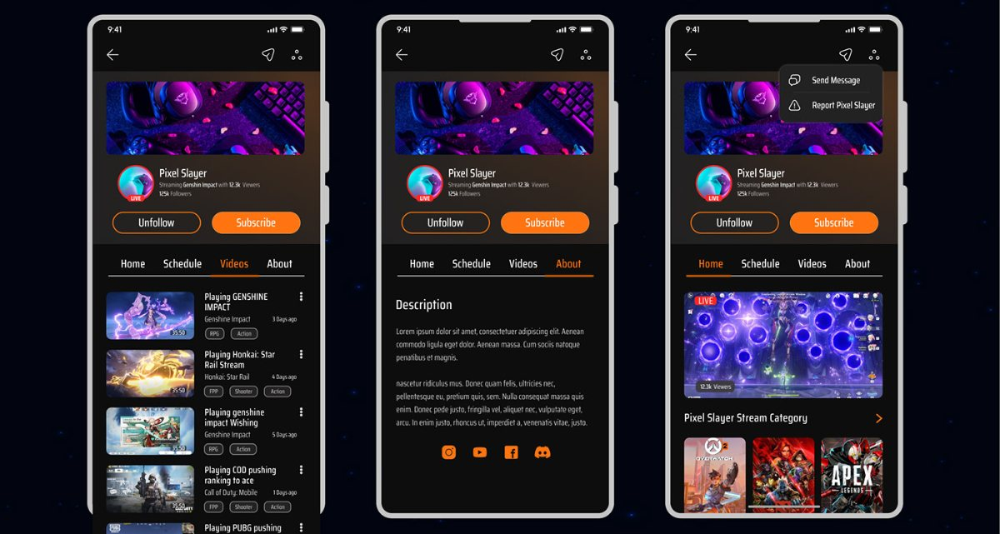

Onboarding that learns your taste
New users are shown popular categories and streamers as soon as they open the app, so the first session already has something worth watching.
Designing a streaming and cloud gaming app around the moment viewers struggle with most: finding something worth watching.

How do I find a streamer worth watching — and a community worth joining?
Cloudy is a game streaming and cloud gaming app. It lets gamers stream and interact with their favourite games in real time, and cloud gaming makes those games less dependent on the device people own. The goal was to connect creators around the world so they could stream their best moments, build teams and make new friends.
I ran the full process myself — a user survey, five in-depth interviews, a competitor analysis of Twitch and YouTube, two personas, a journey map and an empathy map — then moved into user flows, information architecture, wireframes from low to high fidelity, a style guide and the final UI.
The journey map came from the interviews. It followed viewers from having free time to forming a habit — and showed their mood dropping at the point recommendations let them down.
New users are shown popular categories and streamers as soon as they open the app, so the first session already has something worth watching.
Home brings together categories, followed channels, recommended streams and recommended videos, based on what each viewer has watched recently.
Each channel has an organised schedule and a story space for sponsors and events, and live streams carry comments and reactions so watching feels shared.
Screens from the final design, from the first launch to watching and going live.







Cloudy was the first project where I carried research all the way through to UI. Watching the journey map point straight at the problem — the moment recommendations let people down — taught me to design from the evidence rather than from the screens I expected to draw.
Want the full walkthrough of this project? Let’s talk